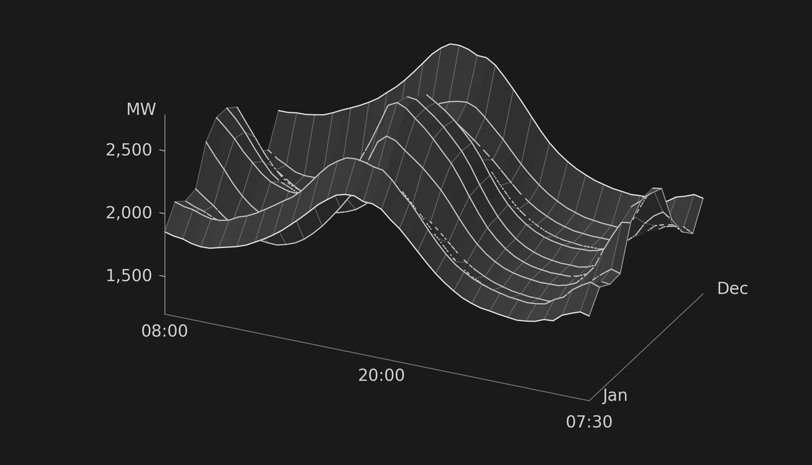
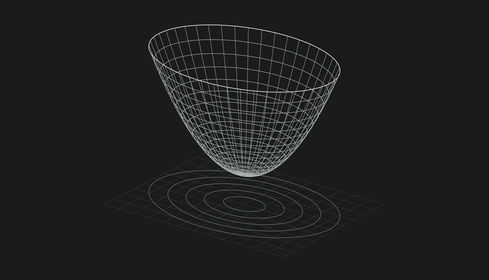
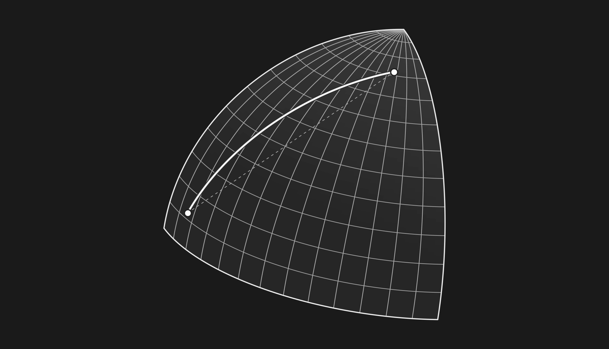
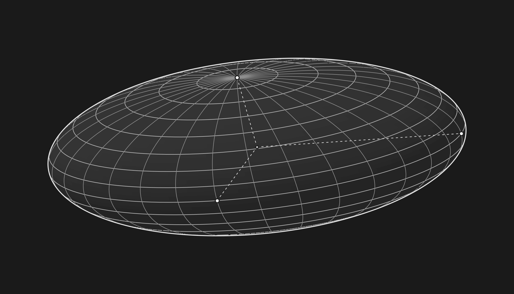
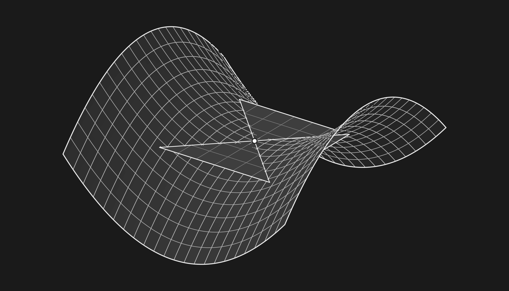

Current work
Data Science Project
In progress




Mathematics & data science
I’m a mathematician and computer scientist interested in how mathematical ideas can help us understand software and data. My goal is to build predictive models grounded in theory, test them against real-world data and use the results to help communities make better decisions.

In progress


I studied pure mathematics at the University of New South Wales and the Australian National University. I later worked as a computer scientist and programmer at Australia’s Defence Science and Technology Group, applying that training to software design.
My interests include mathematical modelling, optimisation and the use of formal methods in software engineering. I program in Python and Java.

